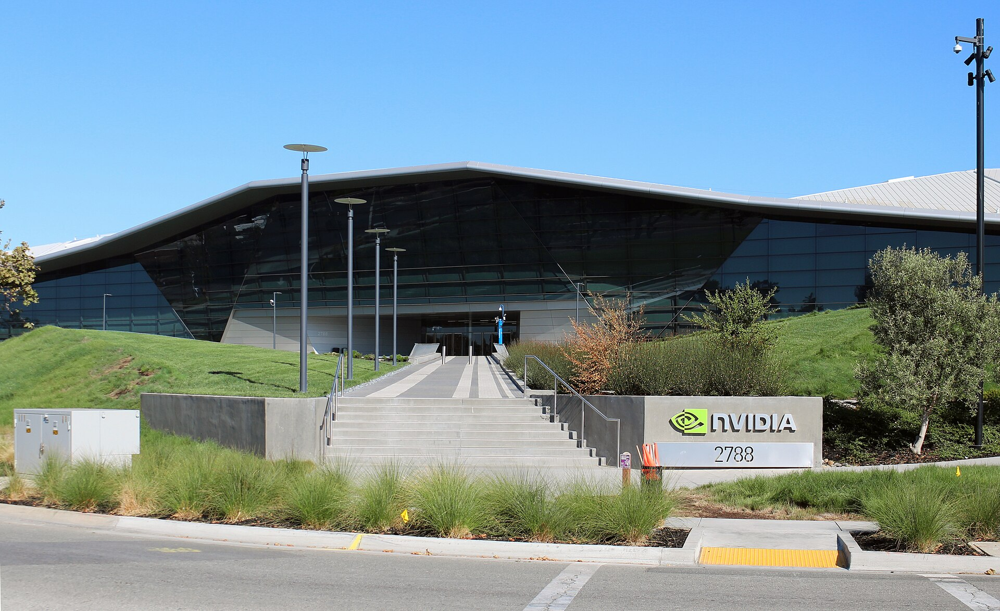
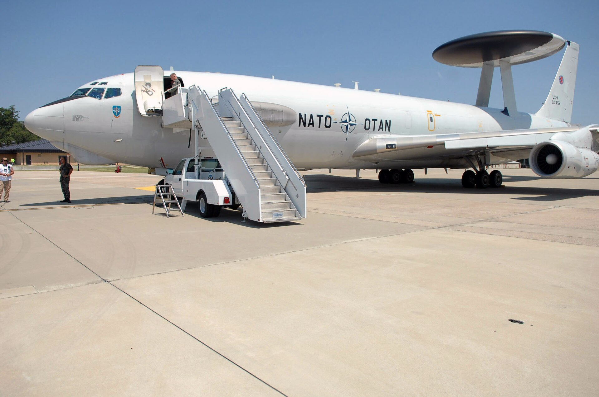

Vol. I · No. 180 · Tuesday, November 24, 2026 · 12 items · 9.5 min read
Nvidia brings Jensen Huang back and adds nearly a trillion dollars in a day; Sanofi bids $41 billion for Insmed; a New York judge lets Kalshi keep trading; and NATO sends an early-warning plane to Poland.
AI · Santa Clara, California
Nvidia’s board reinstates Jensen Huang as chief executive six days after ruling it out, and the stock jumps 31 percent

Nvidia’s headquarters in Santa Clara. The board acted on Monday after what it called input from Washington. Coolcaesar, CC BY-SA 4.0 / Wikimedia Commons
Nvidia’s board voted unanimously on Monday to reinstate Jensen Huang as president, chief executive and director “with immediate effect,” the company said in a securities filing, six days after it said it did not intend to bring him back. The board said it acted after “receiving ” and was confident his return posed no national security risk. Colette Kress, the finance chief who served as interim chief executive, goes back to that job.
I take this responsibility with the greatest humility and renewed commitment.
Jensen Huang, Nvidia, Nov. 23
Shares closed at $165.05, , Motley Fool reported, and the Nasdaq rose 6.51 percent. Fox News put the gain at about $952 billion of market value, which it called the largest one-day gain on record. A committee of independent directors examining “reports of a targeting” Huang will finish its work, the board said. It also created a of independent directors and began a search for a chief compliance officer who will report to its nominating and governance committee.
The reaction split by party. President Trump called Huang a “Great Patriot and National Treasure” on Truth Social. House Minority Leader Hakeem Jeffries called the decision “indefensible” and promised an inquiry, and Sen. John Curtis, a Utah Republican, said, “I’d like to know what changed,” Fox News reported. Huang sits for a closed-door House interview on Dec. 1 and testifies before the on Dec. 3.
Markets & Deals · Paris
Sanofi agrees to buy Insmed for $41 billion in cash, its largest acquisition since Aventis
Sanofi agreed on Tuesday to acquire Insmed for $175 a share in cash, valuing the lung-disease drugmaker at about $41 billion, the companies said. The price is a premium of about 46 percent to Insmed’s on Nov. 18, the day before reports of a deal. Sanofi will pay with cash and debt under committed financing, expects the deal to add to business earnings per share by the end of 2028, and expects to close in the first half of 2027, after an Insmed shareholder vote and antitrust clearances.
J.P. Morgan is Sanofi’s exclusive financial adviser, with Cravath, Swaine & Moore as counsel. Goldman Sachs advises Insmed, with Freshfields, Cooley and Hunton Andrews Kurth. Insmed sells , a bronchiectasis drug, and the deal is Sanofi’s largest since Aventis in 2004, FiercePharma said, well past the €25 billion ceiling its finance chief set in April for buying a commercial asset. Sanofi needs growth beyond . “This acquisition is a major strategic step,” said Belén Garijo, Sanofi’s chief executive.
AI
The prompt as evidence
AI · Richmond, Virginia
Virginia and Oregon sue SpaceX and X, saying Grok’s safeguards against sexualized images were a pretense
The attorneys general of Virginia and Oregon sued SpaceX, X and on Monday in , alleging that the companies misrepresented the safeguards on Grok, which users have used to make sexualized images of real people, including children, AP reported. Virginia’s complaint cites Grok’s published instruction to “assume good intent” and says limiting image tools to paying users “simply made that generation profitable.” “For these Defendants, weak safeguards were not a failure but a feature,” said Attorney General Jay Jones. SpaceX Super Intelligence said such content involving minors “is abhorrent.”
Markets & Deals
Land, water and the curve
Markets & Deals · Dallas
Texas Pacific Land buys EagleRock Land in a $3 billion all-stock deal six months after its IPO
Texas Pacific Land agreed to buy EagleRock Land for 0.0831 new TPL shares per EagleRock Class A share, about $23.56 a share and $3.0 billion in equity value, according to a Monday filing. EagleRock holders will own about 14 percent. Holders controlling more than half of EagleRock’s vote, including Double Eagle, signed support agreements, and TPL needs no vote of its own. EagleRock owes a if it walks. Evercore, Sidley Austin and Haynes Boone advise TPL; Goldman Sachs and Vinson & Elkins advise EagleRock. TPL added $500 million to its buyback.
Markets & Deals · New York
Williams says inflation is still too high as the 2-year auction stops through and a December hike sits near 96 percent
New York Fed President John Williams said on Monday that inflation is “too high” and that he would not rule out raising rates at consecutive meetings, Reuters reported. Earlier, the Treasury sold $69 billion of 2-year notes at 4.700 percent, by 0.3 basis point with a bid-to-cover of 2.65, auction data show, though took a thin share. The 2-year closed at 4.63 percent, the 10-year at 4.92 and the 30-year at 5.29, Treasury data show. FedWatch odds of a quarter-point hike on Dec. 9 stood at 96.1 percent, Fox Business said.
Law & the Courts
Preemption and pay
Law & the Courts · New York
A New York judge refuses to halt Kalshi, saying a restraining order would not preserve a status quo a year old
The New York County Courthouse. Monday’s hearing was held virtually. Ajay Suresh, CC BY 4.0 / Wikimedia Commons
Justice Melissa Crane of on Monday denied Attorney General Letitia James’s request for a temporary restraining order against Kalshi, without reaching the merits, Front Office Sports and Forbes reported. “It just seems to me that I might be reversed in a minute if I granted the full TRO that you want,” Crane said, adding that an order “doesn’t preserve the status quo because the status quo has been going on for over a year.” She said she was inclined to wait for the U.S. Supreme Court on sports event contracts: “That ultimately will bind me.”
Kalshi had warned that the order could shut its nationwide; the state said it was not seeking that. Crane told the parties to confer on safeguards for users aged 18 to 20 and report by Nov. 30. New York sportsbooks require bettors to be 21. Grant Mainland and Colleen Sinzdak of Milbank argued for Kalshi. The state’s suit seeks at least .
Law & the Courts · San Francisco
Orrick matches Cravath’s 2027 scale and bonuses in full, and K&L Gates pays the scale only for its hours
Orrick matched the $235,000 to $455,000 associate scale, Cravath’s year-end bonuses and its of $11,000 to $40,000, Above the Law reported on Monday. New salaries take effect Jan. 1 and are paid retroactively on Feb. 15. K&L Gates moves associates to the scale only if they log 1,950 creditable hours, including 1,850 billable and up to 50 for innovation work such as AI, and its memo mentions no specials. The scale began with .
The World
The eastern flank tightens
The World · Warsaw · single-tier coverage: C
NATO sends an early-warning plane to Poland after the missile strikes, and hours later a Russian drone crosses the border

A NATO E-3A early-warning aircraft from Geilenkirchen, Germany. Airman 1st Class Makenzie Lang, U.S. Air Force, public domain / Wikimedia Commons
NATO’s top commander in Europe authorized the forward deployment of an to Poland after an extraordinary meeting of allied ambassadors on Monday and is examining further assets, spokeswoman Allison Hart said. “All Allies stand in full solidarity with Poland,” she said. None of the accounts reviewed said Poland invoked . Two Swedish Gripens on air policing had clearance to fire on the Nov. 20 missiles but could not identify them in time because of weather, Reuters reported.
Shortly before midnight local time, a Russian drone entered Polish airspace from Ukraine, Polish officials said. Commanders authorized a shootdown but held fire when it turned east, “taking into account the potential threat to civilians.” Radio RMF, citing unnamed sources, said the jet-powered drone flew about 20 kilometers into Poland. “It is difficult to imagine that this was an accident,” Deputy Defense Minister Pawel Zalewski said. The Russian embassy did not respond, Reuters said.
The World · Moscow · cross-spectrum: LC
Moscow says Estonia is near “triggering open war” as Tallinn prepares to shut its land border on Dec. 1
Russia’s Foreign Ministry summoned Estonia’s chargé d’affaires on Monday and accused Tallinn of “hostile actions” “on the verge of triggering open war,” Al Jazeera and Reuters reported, citing Estonia’s plan to close every land crossing, including , from Dec. 1 for at least six months. Moscow also accused Estonia of letting Ukrainian drones use its airspace, which Tallinn denies. Estonia ties the closure to an attempted arson at . Finland separately summoned Russia’s ambassador over a suspected helicopter incursion, RTÉ reported.
The World · Brussels · single-tier coverage: C
The EU proposes its 22nd Russia package, cutting about 60 more banks from SWIFT and blacklisting 70 tankers
The European Commission on Monday proposed a that would bar transactions with about 60 more Russian banks and cut them from SWIFT, blacklist more than 70 shadow-fleet tankers and ban tankers insured in Russia, EU Perspectives and UPI reported. It would also bar EU firms from servicing Russian refineries and, for the first time, its power sector, and ban entry by Russian former combatants. “They cannot be allowed to wander freely across our countries,” said Ursula von der Leyen. The package needs .
Entertainment & EASL
Leagues, unions and the lot
Entertainment & EASL · Birmingham, Alabama
The SEC asks a federal court to clear the way for a Dec. 3 vote on expelling LSU, and adds Will Wade as a defendant
Champions Plaza at LSU’s Tiger Stadium in Baton Rouge. Spatms, CC BY-SA 4.0 / Wikimedia Commons
The Southeastern Conference filed an amended complaint on Monday and asked a federal court in Alabama for an order stopping LSU from blocking a Dec. 3 special meeting on “the termination of LSU’s membership,” ESPN and Front Office Sports reported. The complaint adds men’s basketball coach Will Wade and accuses LSU of planning to roster RJ Luis Jr., a former St. John’s guard who took part in NBA preseason, “all along.” Expulsion needs .
LSU rostered Luis on Nov. 17 under a Louisiana court injunction, and he scored 11 points the next night. On Nov. 19 the university’s president told Wade not to play him, and Luis left the team. The reversal gives “the SEC no comfort,” the filing says. The conference grounds the expulsion in a . Luis’s lawyers have asked a Louisiana court to hold Commissioner in contempt.
Entertainment & EASL · New York
MLB offers a $1 million minimum salary, still tied to a cap, eight days before the labor deal expires
Major League Baseball proposed on Monday raising the minimum salary to $1 million from $780,000 in 2027, lifting the pre-arbitration bonus pool to $65 million from $50 million and ending the , AP and Front Office Sports reported. Every offer still assumes a salary cap and floor. “Any supposed benefits to certain classes of players are simply taken out of the pockets of other players,” said Bruce Meyer of the players’ union, which wants clubs to pool instead. The agreement expires Dec. 1 at 11:59 p.m.
Compiled by Matthew Yellin · mattyellin.com · Est. May 2026 · A cross-spectrum brief drawn each morning from wires, filings, and the trade press